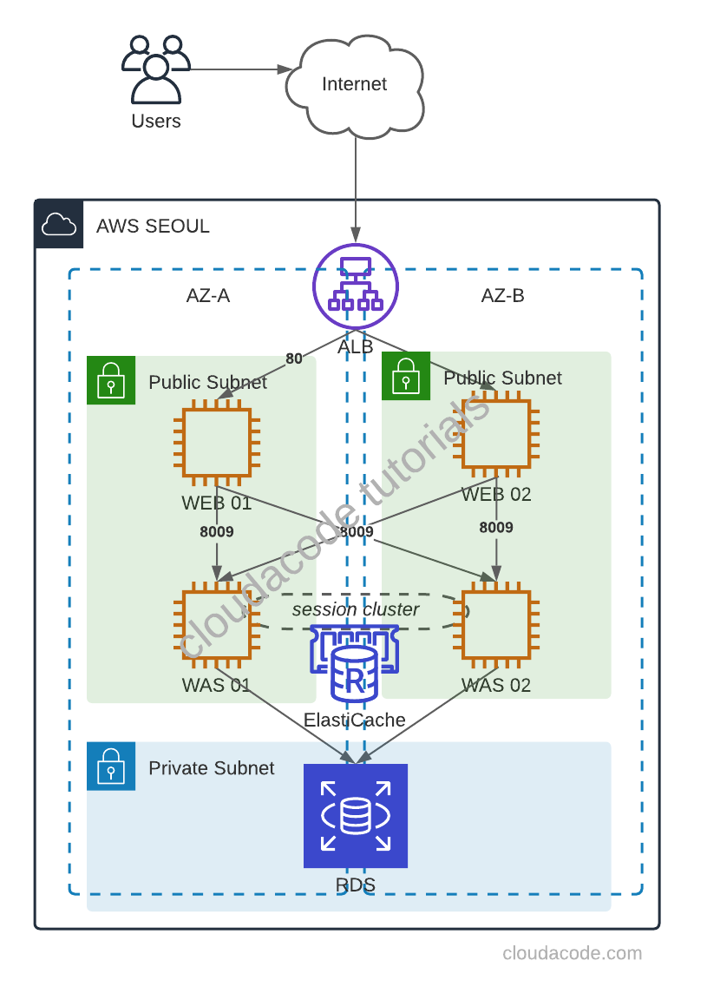

Build a 3tier Web App on AWS
The basic unit of a 3 tier web application which is Apache + Tomcat + Redis + DB and we will use Redis for tomcat session clustering.
WEB(Apache), WAS(Tomcat) + Session Clustering(Redis), DB 구성을 통해 기본적인 웹서비스의 3 Tier 구성에 대해 알아본다.
This tutorial uses the AWS and highly recommend using AWS for setting up the infrastructure to test 3 tier web app.
Time to Complete: 2-3 hours
Cost to Complete: Many of the services used are included in the AWS Free Tier. For those that are not, the sample application will cost, in total, less than $2/day.
Tutorial Prereqs:
- An AWS Account and Administrator-level or PowerUser-level access to it
Please be sure to terminate all of the resources created during this workshop to ensure that you are no longer charged.
System Architecture


1. Create a Web Server
Create EC2 instances
First, create Ubuntu 18.04 EC2 instance(s) for Web Server(s), with public IP and allow 80 for any.
Install Apache on Ubuntu 18.04
Install via apt package
$ sudo apt update
$ sudo apt install apache2
2. Create a WAS Server
Create EC2 instances
First, create Ubuntu 18.04 EC2 instance(s) for Was Server(s), with public IP, allow 8080 for any, and allow 8009 for WEB server SG group.
Set up a Tomcat User
Note
Tomcat should be run as an unprivileged user (i.e. not root)
$ sudo groupadd tomcat
$ sudo useradd -s /bin/false -g tomcat -d /opt/tomcat tomcat
Install Tomcat via Source package
First, Tomcat needs JDK
$ sudo apt update
$ sudo apt install default-jdk -y
$ sudo update-java-alternatives -l
Download Tomcat Source package Download
$ curl -O https://ftpmirror1.infania.net/mirror/apache/tomcat/tomcat-9/v9.0.41/bin/apache-tomcat-9.0.41.tar.gz
Execute the following command to create tomcat directory and extract source pakcage
$ sudo mkdir /opt/tomcat
$ sudo tar xzvf apache-tomcat-*tar.gz -C /opt/tomcat --strip-components=1
Set up the permission for tomcat user/group
cd /opt/tomcat
sudo chgrp -R tomcat /opt/tomcat
sudo chmod -R g+r conf
sudo chmod g+x conf
sudo chown -R tomcat webapps/ work/ temp/ logs/
Now, configure the systemd service file /etc/systemd/system/tomcat.service
[Unit]
Description=Apache Tomcat Web Application Container
After=network.target
[Service]
Type=forking
Environment=JAVA_HOME=/usr/lib/jvm/java-1.11.0-openjdk-amd64
Environment=CATALINA_PID=/opt/tomcat/temp/tomcat.pid
Environment=CATALINA_HOME=/opt/tomcat
Environment=CATALINA_BASE=/opt/tomcat
Environment='CATALINA_OPTS=-Xms512M -Xmx1024M -server -XX:+UseParallelGC'
Environment='JAVA_OPTS=-Djava.awt.headless=true -Djava.security.egd=file:/dev/./urandom'
ExecStart=/opt/tomcat/bin/startup.sh
ExecStop=/opt/tomcat/bin/shutdown.sh
User=tomcat
Group=tomcat
UMask=0007
RestartSec=10
Restart=always
[Install]
WantedBy=multi-user.target
Start tomcat service
sudo systemctl daemon-reload
sudo systemctl start tomcat
sudo systemctl status tomcat
Open your browser to check tomcat server http://was_server_IP:8080
Congratulations, you have installed the basic tomcat server
Create sample Webapp in Tomcat
$ cd /opt/tomcat
$ sudo mkdir -p webapps/demo
index.jsp
<html>
<body>
TOMCAT DEMO
</body>
</html>
Restart tomcat service
$ sudo systemctl restart tomcat.service
http://WAS_SERVER_IP:8080/demo
Now, you have a new demo webapp
3. Integrate apache and tomcat via AJP protocol
Note
Tomcat AJP protocol connector https://tomcat.apache.org/tomcat-7.0-doc/config/ajp.html
Enable AJP in Tomcat server
In order to make connection between apache and tomcat, enable AJP connector in /opt/tomcat/conf/server.xml
<!-- Define an AJP 1.3 Connector on port 8009 -->
<Connector protocol="AJP/1.3"
address="0.0.0.0"
secretRequired="false"
port="8009"
redirectPort="8443" />
<Engine name="Catalina" defaultHost="localhost" jvmRoute="ajp13_worker01">
Please keep in mind, the jvmRoute value stands for worker name and each WAS has a unique name.
Restart tomcat service
$ sudo systemctl restart tomcat.service
Setup mod_jk module in Apache server
Install mod_jk library
$ cd /etc/apache2
$ sudo apt-get install libapache2-mod-jk
$ sudo ln -s /etc/libapache2-mod-jk/workers.properties
Configure worker infomation as WAS server in workers.properties
Single WAS server,
workers.tomcat_home=/usr/share/tomcat8
workers.java_home=/usr/lib/jvm/default-java
ps=/
worker.list=ajp13_worker_lb
worker.ajp13_worker01.port=8009
worker.ajp13_worker01.host=`WAS Server IP`
worker.ajp13_worker01.type=ajp13
worker.ajp13_worker01.lbfactor=100
worker.ajp13_worker_lb.type=lb
worker.ajp13_worker_lb.balance_workers=ajp13_worker01
Multiple WAS servers,
workers.tomcat_home=/usr/share/tomcat8
workers.java_home=/usr/lib/jvm/default-java
ps=/
worker.list=ajp13_worker_lb
worker.ajp13_worker01.port=8009
worker.ajp13_worker01.host=`WAS Server01 IP`
worker.ajp13_worker01.type=ajp13
worker.ajp13_worker01.lbfactor=50
worker.ajp13_worker02.port=8009
worker.ajp13_worker02.host=`WAS Server02 IP`
worker.ajp13_worker02.type=ajp13
worker.ajp13_worker02.lbfactor=50
worker.ajp13_worker_lb.type=lb
worker.ajp13_worker_lb.balance_workers=ajp13_worker01,ajp13_worker02
Note
Loadbalancing https://tomcat.apache.org/connectors-doc/common_howto/loadbalancers.html
In order to forward traffic to tomcat, add JkMount configuration in site default file(/etc/apache2/sites-enabled/000-default.conf)
<VirtualHost *:80>
ServerAdmin localhost
DocumentRoot /var/www/html
JkMount /*.jsp ajp13_worker_lb
ErrorLog ${APACHE_LOG_DIR}/error.log
CustomLog ${APACHE_LOG_DIR}/access.log combined
</VirtualHost>
Restart Apache service
$ sudo systemctl restart apache.service
Now, the Apache forwards JSP request to Tomcat and response
http://WEB_SERVER_IP:8080/demo/index.jsp
Congratulations, you have integrated WEB, WAS tier
4. Tomcat Session Clustering with Redis
We have several options to set up the session clustering, and this tutorial is going to use Redisson-tomcat library which is the most active library for Redis session clustering.
Create the ElastiCache cluster
First, create Redis via ElastiCache cluster, and allow 6379 for WAS server SG group.
Setup the Redisson library
Download redisson-all, redisson-tomcat library in tomcat lib directory
$ sudo curl -O https://repository.sonatype.org/service/local/repositories/central-proxy/content/org/redisson/redisson-all/3.15.0/redisson-all-3.15.0.jar
$ sudo curl -O https://repository.sonatype.org/service/local/repositories/central-proxy/content/org/redisson/redisson
-tomcat-9/3.15.0/redisson-tomcat-9-3.15.0.jar
$ sudo mv redisson* /opt/tomcat/lib/
Add the redisson class in conf/context.xml
<Manager className="org.redisson.tomcat.RedissonSessionManager"
configPath="${catalina.base}/conf/redisson.conf"
readMode="REDIS" updateMode="DEFAULT" broadcastSessionEvents="false"
keyPrefix=""/>
Setup the conf/redisson.conf
{
"singleServerConfig":{
"address": "redis://`ElastiCache_Cluster`:6379"
},
"threads":0,
"nettyThreads":0,
"transportMode":"NIO"
}
Restart tomcat service
$ sudo systemctl restart tomcat.service
Now, you can check session information in Redis
If you don't have redis-client, install redis-tools apt package
apt-get install redis-tools
Access redis cluster and check keys which are the session ID.
$ redis-cli -h session01.mvqc4c.0001.apn2.cache.amazonaws.com
session01.mvqc4c.0001.apn2.cache.amazonaws.com:6379> KEYS *
1) "redisson:tomcat_session:959CB3E05C307CB9ECCEB4534E84CFE8.ajp13_worker01"
2) "redisson:tomcat_session:7616482947EC5AC55A6ACDFF5F4BEC01.ajp13_worker02"
Add following JSP file to check via browser
webapps/demo/session.jsp
<html>
<body>
<table border="1">
<tr>
<td>Session ID</td>
<td><%=session.getId()%></td>
</tr>
<tr>
<td>Server IP</td>
<td><%=request.getLocalAddr()%></td>
</tr>
</table>
<div>Server Name: <b><%=request.getLocalName()%></b></div>
</body>
</html>
Restart apache2 service
$ sudo systemctl restart apache2
http://WEB_SERVER_IP/demo/session.jsp
Please stop one of the tomcat servers and check the session is still in place Congratulations, you have integrated Session Clustering
5. Implement Database
Deploy a RDS
First, create Mysql via RDS, and allow 3306 for WAS server SG group.
Create a dummy database
Access RDS and create a Dummy database
create database javatest;
use javatest;
create table testdata (id int not null auto_increment primary key, foo varchar(25), bar int);
insert into testdata values(null, 'hello', 12345);
select * from testdata;
Setup mysql connector for Tomcat
In order to connect mysql, add mysql connector in the WAS(Tomcat) server(s)
$ cd tmp/
$ curl -O https://cdn.mysql.com//Downloads/Connector-J/mysql-connector-java-8.0.23.zip
$sudo mv /tmp/mysql-connector-java-8.0.23/mysql-connector-java-8.0.23.jar /opt/tomcat/lib/
Update conf/context.xml
<Resource name="jdbc/TestDB" auth="Container" type="javax.sql.DataSource" maxActive="100" maxIdle="30" maxWait="10000" username="DB_USERNAME" password="DB_PASSWORD" driverClassName="com.mysql.jdbc.Driver" url="jdbc:mysql://RDS_ENDPOINT:3306/javatest"/>
Please change the DB_USERNAME, DB_PASSWORD, and RDS_ENDPOINT
Add following JSP file in the webapps/demo/testdb.jsp to check via browser
<%@page import="java.sql.DriverManager"%>
<%@page import="java.sql.ResultSet"%>
<%@page import="java.sql.Statement"%>
<%@page import="java.sql.Connection"%>
<%
String id = request.getParameter("userid"); String driver =
"com.mysql.jdbc.Driver"; String connectionUrl =
"jdbc:mysql://RDS_ENDPOINT:3306/";
String database = "javatest"; String userid = "DB_USERNAME"; String password =
"DB_PASSWORD"; try { Class.forName(driver); } catch (ClassNotFoundException e) {
e.printStackTrace(); } Connection connection = null; Statement statement = null;
ResultSet resultSet = null; %>
<!DOCTYPE html>
<html>
<body>
<table border="1">
<tr>
<td>session id</td>
<td><%=session.getId()%></td>
</tr>
<tr>
<td>foo</td>
<td>bar</td>
</tr>
<% try{ connection = DriverManager.getConnection(connectionUrl+database,
userid, password); statement=connection.createStatement(); String sql
="select id, foo, bar from testdata"; resultSet =
statement.executeQuery(sql); while(resultSet.next()){ %>
<tr>
<td><%=resultSet.getString("foo") %></td>
<td><%=resultSet.getString("bar") %></td>
</tr>
<% } connection.close(); } catch (Exception e) { e.printStackTrace(); } %>
</table>
</body>
</html>
Restart apache2 service
$ sudo systemctl restart tomcat.service
Now, this testdb.jsp will return the DB result which is in the RDS
http://WEB_SERVER_IP/demo/testdb.jsp

Congratulations, you have completed WEB, WAS, DB tutorial
Reference
- https://www.digitalocean.com/community/questions/apache-virtual-host-with-multiple-tomcat-server
- https://github.com/redisson/redisson/wiki/2.-Configuration#221-yaml-file-based-configuration